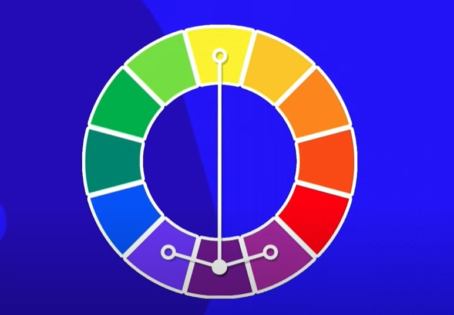
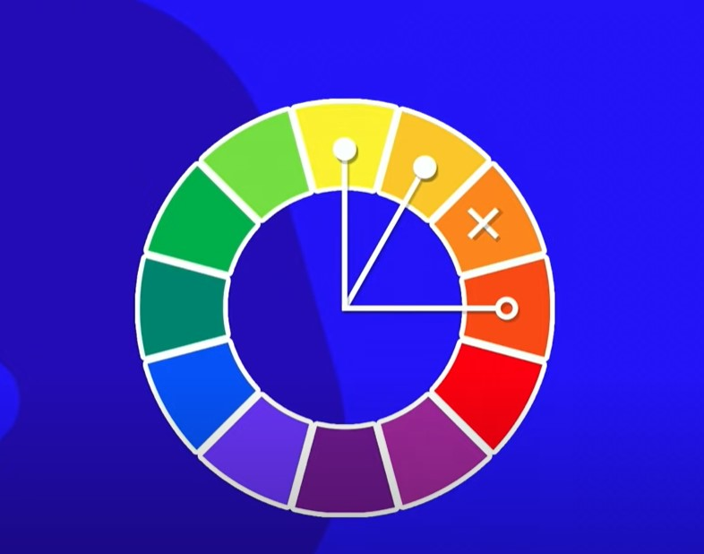
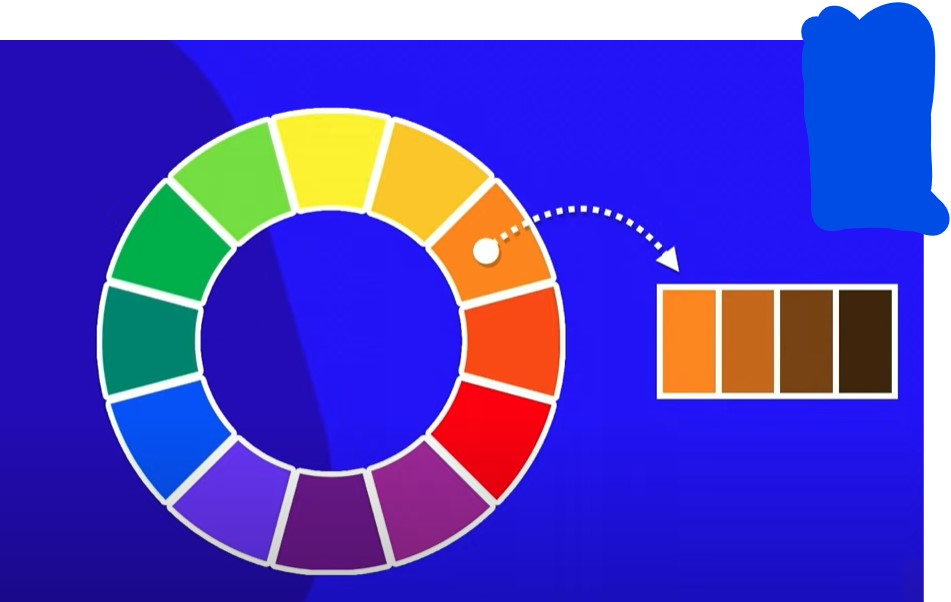

Presta atenção nos sentimentos que as cores causam, pesquise no google.
Site com fundo preto e letras brancas causam cansaço muito rapido, so usa se tiver pouco texto, o ideal para muita leitura e fundo branco e letra preta
Presta atenção nos sentimentos que as cores causam, pesquise no google.
Site com fundo preto e letras brancas causam cansaço muito rapido, so usa se tiver pouco texto, o ideal para muita leitura e fundo branco e letra preta
Presta atenção nos sentimentos que as cores causam, pesquise no google.
Site com fundo preto e letras brancas causam cansaço muito rapido, so usa se tiver pouco texto, o ideal para muita leitura e fundo branco e letra preta
Presta atenção nos sentimentos que as cores causam, pesquise no google.
Site com fundo preto e letras brancas causam cansaço muito rapido, so usa se tiver pouco texto, o ideal para muita leitura e fundo branco e letra preta


A paleta sempre parte de uma cor principal, Use de 3 a 5 cores(desconsidere branco e preto)
Sao as cores que tem mais contraste entre si
exemplo, considere o marrom, escolha a cor mais oposta a ele, ou num circulo cromatico trase uma reta para o outro lado(não necessariamente vai ficar bonito, vc pode trabalhar com os tons tmb)
Sao cores que nao tem contraste entre si, sao cores irmãs, no circulo cromatico pegue as cores imediatamente ao lado
juntando as duas tecnicas vc pode pegar duas cores ao lado no circulo cromatico e trasar uma reta ao outro lado para o contraste
EX:
Essa é uma forma de criar um contraste menos agressivo
Na monocromia vc trabalha com 1 cor so, e vc modifica 2 caracteristicas que é a saturação e o brilho
